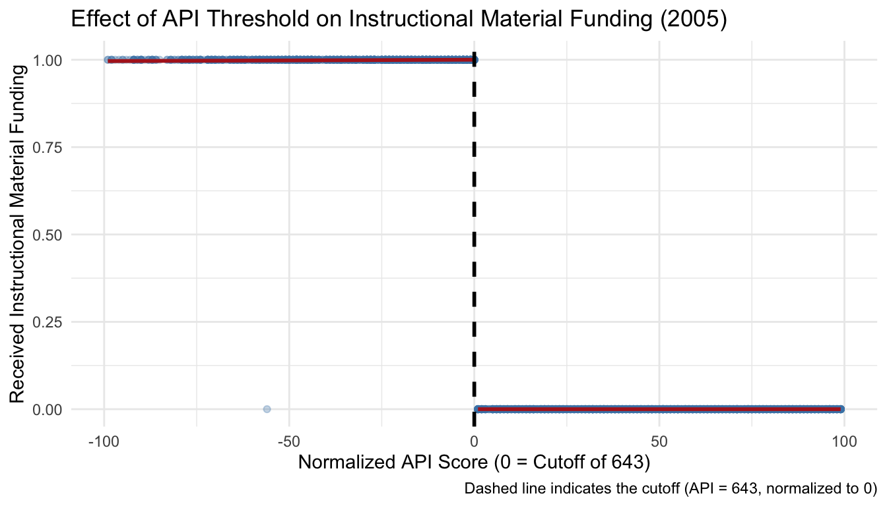
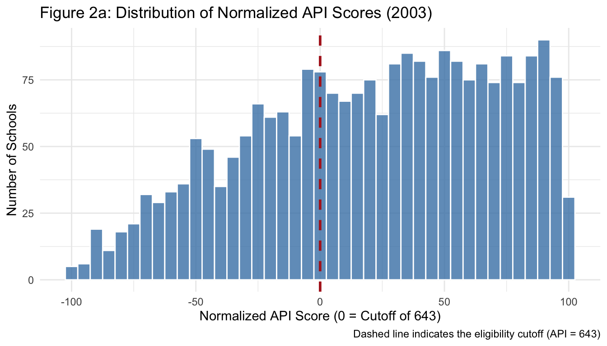
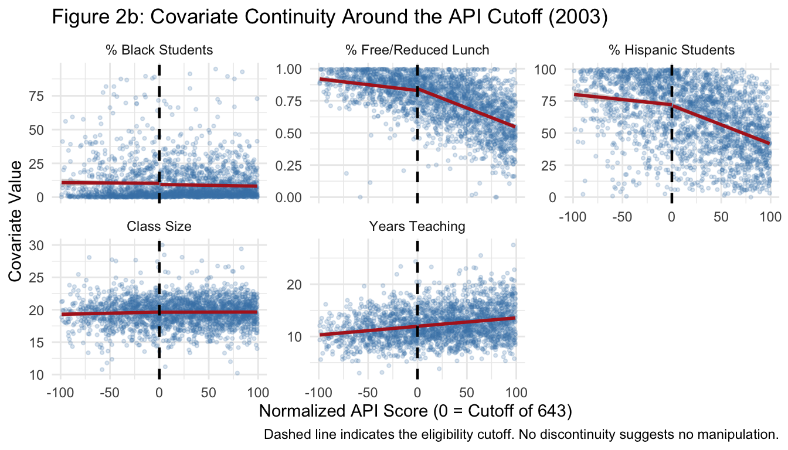
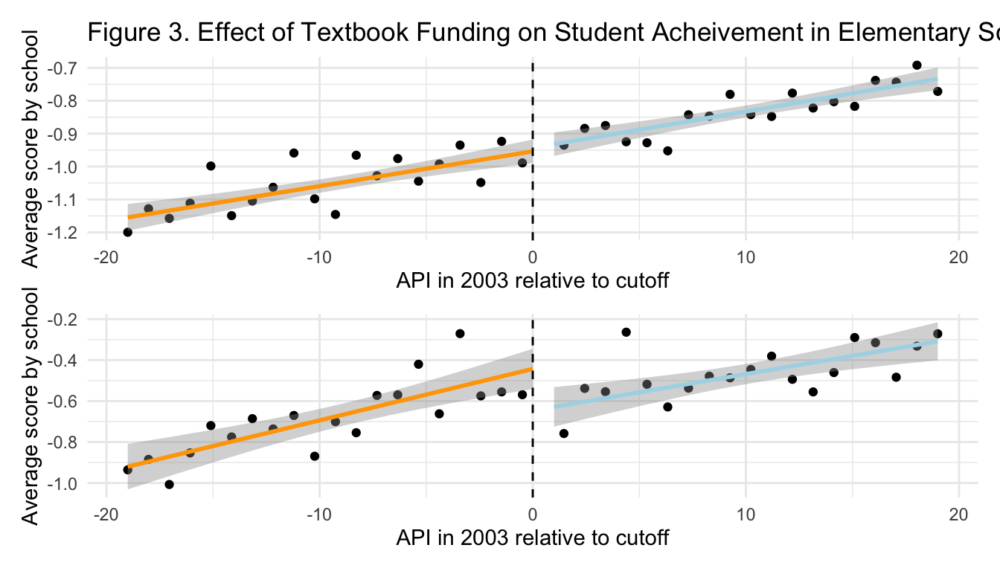

A1. Describes whether the forcing variable predicts the question variable of interest./
Answer Figure 1 displays the relationship between schools’ 2003 Academic Performance Index (API) scores and the probability of receiving additional instructional material funding in 2005, with the forcing variable centered at the eligibility cutoff of 643 (normalized to 0). A clear discontinuity is evident at the threshold, with schools just below the cutoff showing a substantially higher probability of receiving funding, confirming that the forcing variable strongly predicts treatment assignment as intended by the Williams settlement funding policy.
Code
data <-read_dta(here("data/EDLD_650_CA_schools_es.dta")) data_2005 <- data %>%filter(year ==2005) %>%filter(!is.na(receive_williams), !is.na(norm))ggplot(data_2005, aes(x = norm, y = receive_williams)) +geom_point(alpha =0.3, size =1.5, color ="steelblue") +geom_smooth(data =filter(data_2005, norm <=0),method ="lm", se =TRUE, color ="firebrick") +geom_smooth(data =filter(data_2005, norm >0),method ="lm", se =TRUE, color ="firebrick") +geom_vline(xintercept =0, linetype ="dashed", color ="black", linewidth =1) +labs(title ="Effect of API Threshold on Instructional Material Funding (2005)",x ="Normalized API Score (0 = Cutoff of 643)",y ="Received Instructional Material Funding",caption ="Dashed line indicates the cutoff (API = 643, normalized to 0)" ) +theme_minimal()

A2. Is there evidence of schools manipulating their placement around the discontinuity?/
Answer Figure 2a shows the distribution of schools’ 2003 API scores around the eligibility cutoff. The distribution is smooth with no unusual bunching of schools just below the threshold, suggesting that schools did not manipulate their scores to qualify for Williams funding.
Code
data_2003 <- data%>%filter(year ==2003)ggplot(data_2003, aes(x = norm)) +geom_histogram(binwidth =5, fill ="steelblue", color ="white", alpha =0.8) +geom_vline(xintercept =0, linetype ="dashed", color ="firebrick", linewidth =1) +labs(title ="Figure 2a: Distribution of Normalized API Scores (2003)",x ="Normalized API Score (0 = Cutoff of 643)",y ="Number of Schools",caption ="Dashed line indicates the eligibility cutoff (API = 643)" ) +theme_minimal()

Figure 2b examines whether schools on either side of the cutoff looked similar on key pre-treatment characteristics , including free/reduced lunch eligibility, class size, years of teaching experience, and racial composition , none of which could have been affected by receiving Williams funding. The lack of any sharp jump in these characteristics at the cutoff suggests that schools just below and just above the threshold were comparable, supporting the validity of the regression discontinuity design.
Code
data_2003_long <- data_2003 %>%mutate(above_cutoff =ifelse(norm >0, "Above Cutoff", "Below Cutoff")) %>%select(norm, above_cutoff, percentfrl, classsize, yrs_teach, pct_hi, pct_aa) %>%pivot_longer(cols =c(percentfrl, classsize, yrs_teach, pct_hi, pct_aa),names_to ="covariate",values_to ="value") %>%mutate(covariate =recode(covariate,"percentfrl"="% Free/Reduced Lunch","classsize"="Class Size","yrs_teach"="Years Teaching","pct_hi"="% Hispanic Students","pct_aa"="% Black Students" ))ggplot(data_2003_long, aes(x = norm, y = value)) +geom_point(alpha =0.2, size =0.8, color ="steelblue") +geom_smooth(data =filter(data_2003_long, norm <=0),method ="lm", se =TRUE, color ="firebrick") +geom_smooth(data =filter(data_2003_long, norm >0),method ="lm", se =TRUE, color ="firebrick") +geom_vline(xintercept =0, linetype ="dashed", color ="black", linewidth =0.8) +facet_wrap(~ covariate, scales ="free_y") +labs(title ="Figure 2b: Covariate Continuity Around the API Cutoff (2003)",x ="Normalized API Score (0 = Cutoff of 643)",y ="Covariate Value",caption ="Dashed line indicates the eligibility cutoff. No discontinuity suggests no manipulation." ) +theme_minimal()

A3. Construct a table of summary statistics./
Answer Table 1 presents summary statistics for the 2,353 elementary schools in our sample in 2003. Compared to Holden (2016)’s full California sample, our data covers fewer years (2003–2009 vs. 2002–2011) and skews toward lower-performing, higher-poverty schools, with a higher share of Hispanic students (62.72% vs. 47.01%) and free/reduced lunch eligibility (75% vs. 54.38%).
Because our sample is concentrated near the eligibility threshold, estimates are most relevant to schools around the cutoff and may not generalize to the broader California elementary school population , consistent with the local average treatment effect interpretation of regression discontinuity designs.
B1. Did the receipt of additional funds for instructional materials improve test score outcomes for elementary students in California? Construct a figure that presents graphical evidence in support of your answer to this question./
Answer In Figure 3, we seek to provide visual evidence of the impact of additional textbook funds for instructional materials on student achievement by comparing the baseline score in 2003 with post-treatment outcomes in 2005. Following Holden (2016), we utilize a bandwidth of 19.099 API points for the main analysis. Panel A of Figure 3 shows school-level test scores in 2003, before the IMWC textbook funding is assigned, and panel B shows school-level test scores in 2005, after the IMWC textbook funding is distributed, both as a function of 2003 API. Visual inspection suggests that test scores are discontinuously higher after IMWC textbook funding is assigned while pre-treatment outcomes are similar.
Code
data_2003_analysis <- data_2003 %>%filter(abs(norm) <=19.099)data_2005_analysis <- data_2005 %>%filter(abs(norm) <=19.099)panel_a <-ggplot(data_2003_analysis , aes(x = norm, y = average_score)) +stat_summary_bin(fun ="mean", bins =40, geom ="point") +geom_smooth(data =filter(data_2003_analysis, norm <=0),method ="lm", color ="orange") +geom_smooth(data =filter(data_2003_analysis, norm >0),method ="lm", color ="lightblue") +geom_vline(xintercept =0, linetype ="dashed") +labs(title ="Figure 3. Effect of Textbook Funding on Student Acheivement in Elementary Schools",x ="API in 2003 relative to cutoff",y ="Average score by school") +theme_minimal()panel_b <-ggplot(data_2005_analysis , aes(x = norm, y = average_score)) +stat_summary_bin(fun ="mean", bins =40, geom ="point") +geom_smooth(data =filter(data_2005_analysis, norm <=0),method ="lm", color ="orange") +geom_smooth(data =filter(data_2005_analysis , norm >0),method ="lm", color ="lightblue") +geom_vline(xintercept =0, linetype ="dashed") +labs(x ="API in 2003 relative to cutoff",y ="Average score by school") +theme_minimal()panel_a/panel_b

B2. In a regression framework, formally test whether the receipt of additional funds for instructional materials improved test score outcomes for elementary students in California./
Answer
Code
data_bandwidth <- data %>%filter(abs(norm) <=19.099)data_2003 <-subset(data_bandwidth, year ==2003)data_2004 <-subset(data_bandwidth, year ==2004)data_2005 <-subset(data_bandwidth, year ==2005)data_2006 <-subset(data_bandwidth, year ==2006)data_2007 <-subset(data_bandwidth, year ==2007)data_2008 <-subset(data_bandwidth, year ==2008)data_2009 <-subset(data_bandwidth, year ==2009)data_all_post <-subset(data_bandwidth, year >=2005)fit_all <-lm(average_score ~ ind * norm, data = data_all_post)fit_2003 <-lm(average_score ~ ind * norm, data = data_2003)fit_2004 <-lm(average_score ~ ind * norm, data = data_2004)fit_2005 <-lm(average_score ~ ind * norm, data = data_2005)fit_2006 <-lm(average_score ~ ind * norm, data = data_2006)fit_2007 <-lm(average_score ~ ind * norm, data = data_2007)fit_2008 <-lm(average_score ~ ind * norm, data = data_2008)fit_2009 <-lm(average_score ~ ind * norm, data = data_2009)models_avg <-list("All Post"= fit_all,"2003"= fit_2003,"2004"= fit_2004,"2005"= fit_2005,"2006"= fit_2006,"2007"= fit_2007,"2008"= fit_2008)modelsummary(models_avg,vcov ="HC1",stars =TRUE,coef_map =c("ind"="Treatment"),gof_omit ="AIC|BIC|Log.Lik|RMSE",title ="Table 2. Regression Discontinuity Estimates of Effect of Textbook on Student Achievement in Elementary Schools")
Table 2. Regression Discontinuity Estimates of Effect of Textbook on Student Achievement in Elementary Schools